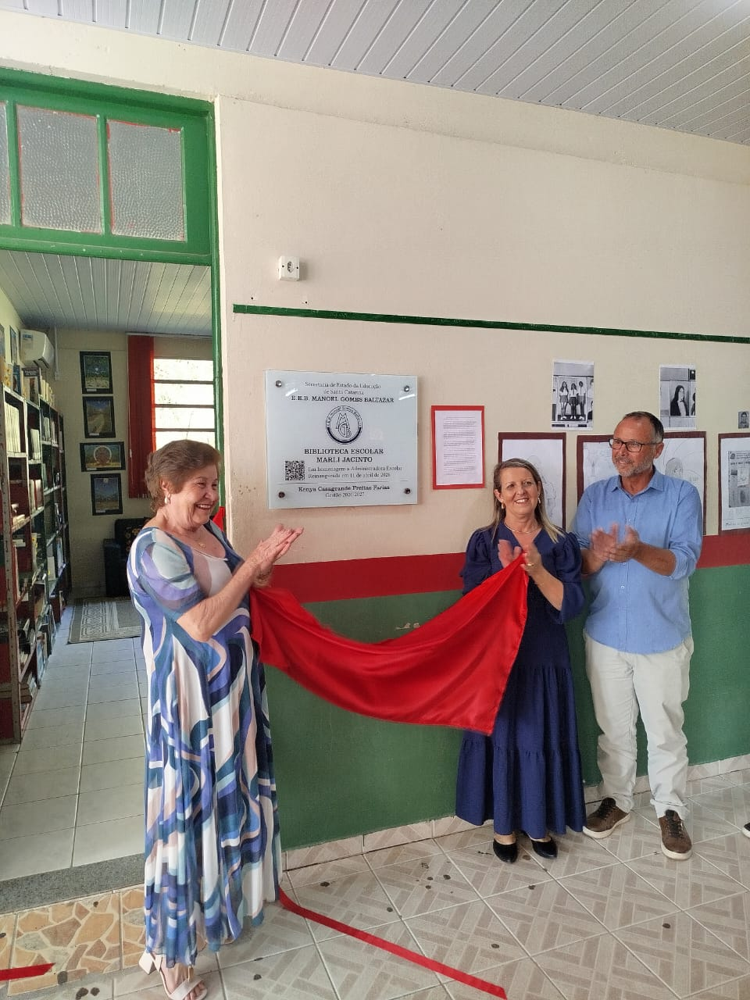
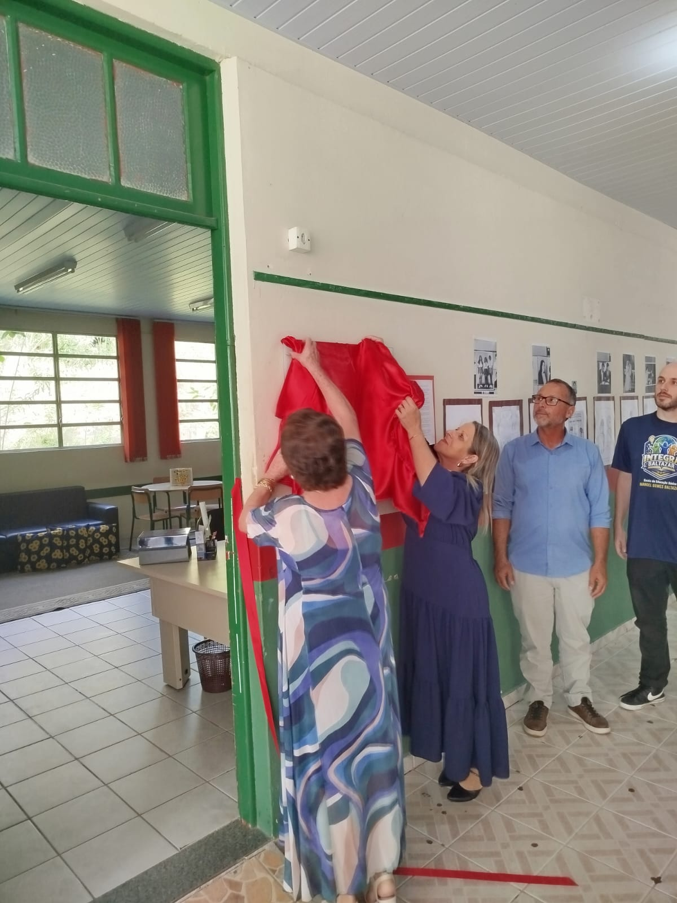
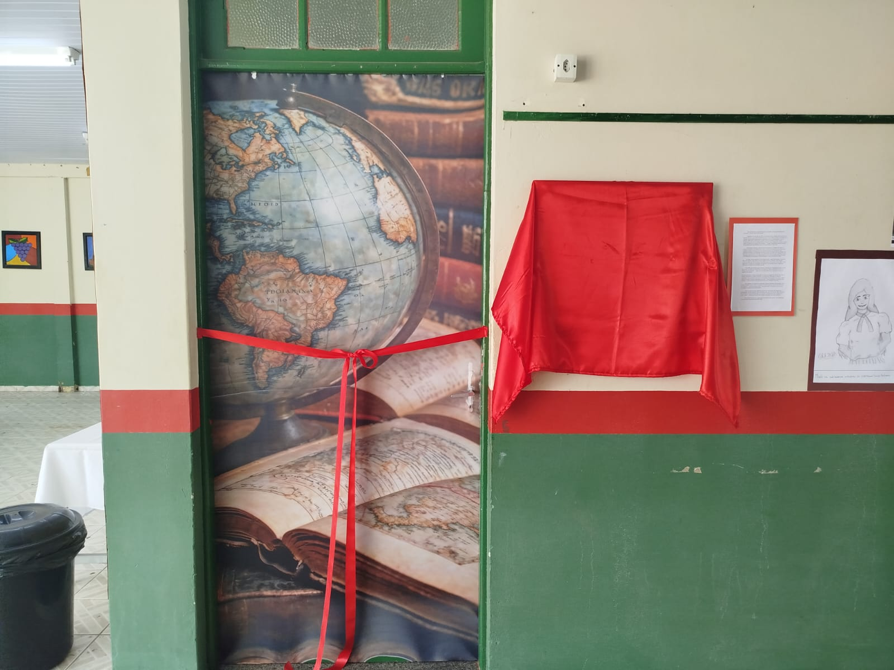
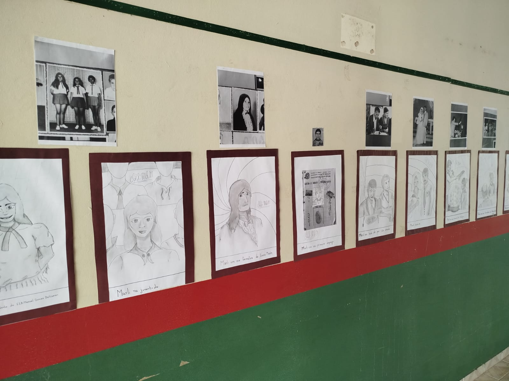
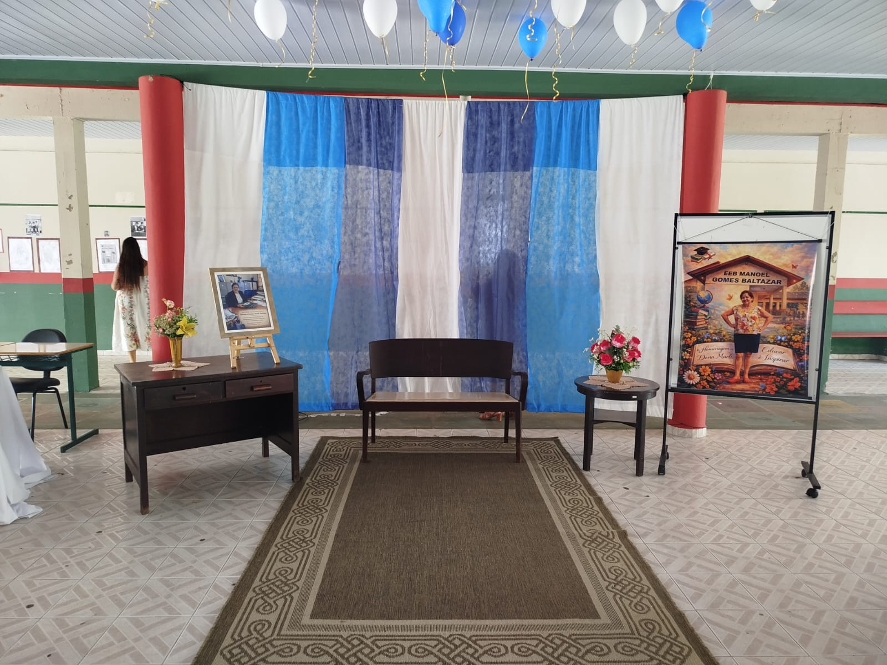

Marli Jacinto
Sobre Marli
Marli dedicou décadas ao ensino na EEB Manoel Gomes Baltazar, deixando um legado de carinho e sabedoria.
Sua presença nos corredores e na biblioteca sempre foi sinônimo de acolhimento para todos.
Legado: Educação e Acolhimento
Missão: Transformar vidas
Galeria do Evento




